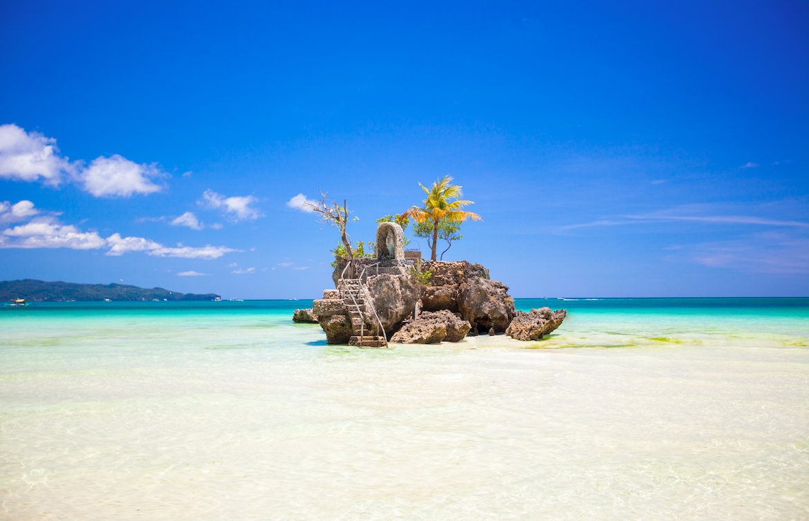
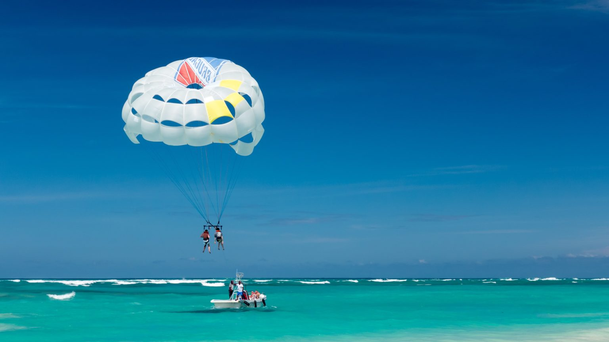
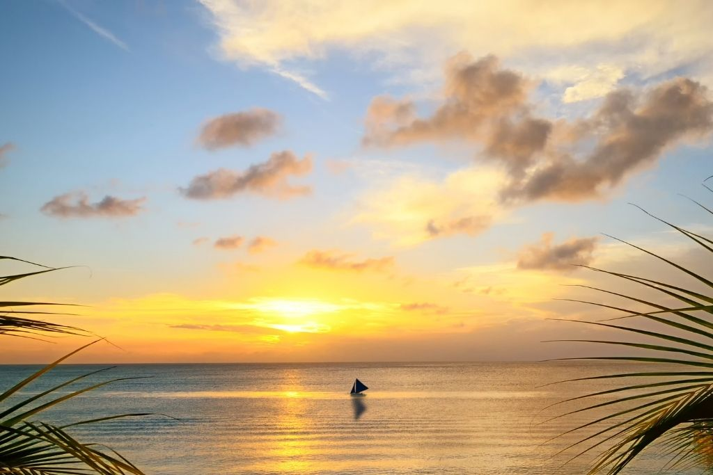

Beautiful Beaches
Boracay, Philippines, is a tropical paradise celebrated for its breathtaking beaches. White Beach, the crown jewel, boasts fine,
powdery white sand and clear, azure waters, perfect for swimming and stunning sunsets. Puka Shell Beach, named after its abundance of
tiny Puka shells, offers a quieter escape with coarser sand, ideal for shell collectors and snorkelers. Bulabog Beach on the east side
is a water sports haven, renowned for windsurfing and kiteboarding, while Diniwid Beach, nestled next to White Beach, provides a more
serene ambiance with rocky shores and intimate coves. Each of Boracay's beaches presents a unique charm, making it a dream destination
for sun-seekers and nature lovers alike, where you can bask in the beauty of the Philippines' natural wonders.
Exciting Water Sports Activities
Boracay is a paradise for water sports enthusiasts, offering a thrilling array of aquatic adventures. Wind and kite surfers flock to
Bulabog Beach on the eastern side, where strong winds and flat waters create ideal conditions for high-octane rides and impressive tricks
Paddleboarding and kayaking are popular in the calm, clear waters of Boracay's beaches, providing a more leisurely but equally enjoyable
experience. You can explore hidden coves, vibrant coral reefs, and even venture to nearby islands For those seeking an adrenaline rush, parasailing
is a must-try. You'll soar high above the island, enjoying panoramic views of Boracay's stunning coastline. Jet skiing, banana boat rides, and
flyboarding are also readily available for those looking to inject even more excitement into their beach vacation. Boracay's water sports scene
ensures an unforgettable and action-packed experience for adventure seekers.
Sunsets
Sunsets in Boracay are nothing short of breathtaking, painting the sky with a mesmerizing palette of colors. As the sun descends towards the horizon,
the entire island comes alive with anticipation. The most iconic spot to witness this daily spectacle is at White Beach, where the soft, powdery sand turns
into a front-row seat to nature's grand performance.As the sun's golden glow intensifies, it casts a warm radiance over the crystal-clear waters. As it dips
below the horizon, the sky ignites with shades of orange, pink, and purple, creating a stunning contrast against the deepening blue of the sea. Silhouettes
of sailboats and paraws add to the scene's charm, making it perfect for romantic moments, photography, or simply quiet contemplation. The Boracay sunset is
a magical experience that lingers in your memory long after you've left this tropical paradise.
  